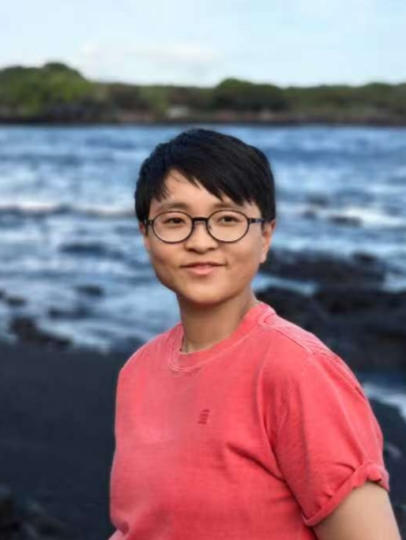
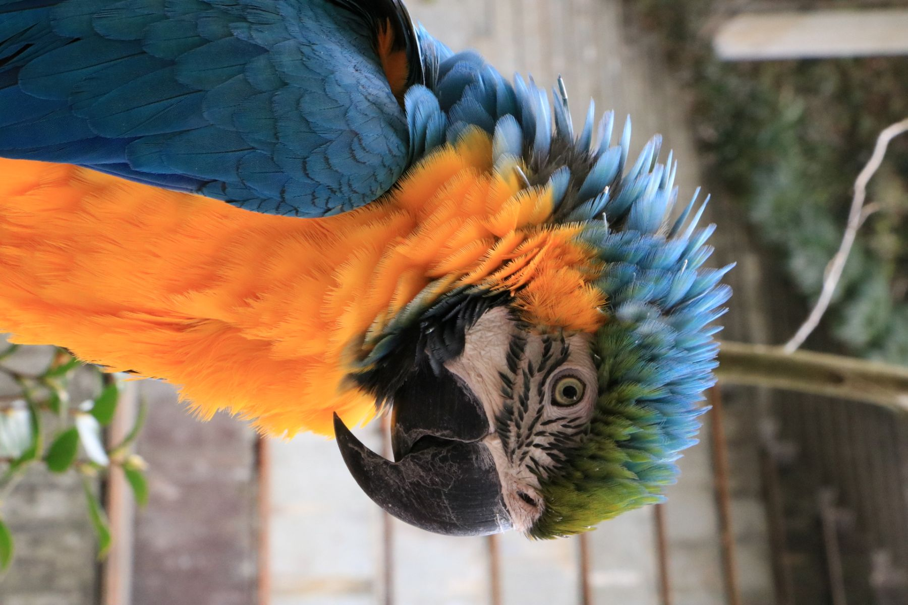

Meet Our Lab
We are building a diverse team of scientists driven by a shared passion for rigorous, impactful science in a collaborative and supportive environment.
Join Us
We are building a diverse team of scientists driven by a shared passion for rigorous, impactful science in a collaborative and supportive environment.
Join Us
Department of Biological Chemistry and Pharmacology
Jiayi grew up in Shanghai, China, where she pursued her B.S. and Ph.D. degrees in Biochemistry and Molecular Biology at Fudan University. She then joined the lab of Dr. Antonina Roll-Mecak at the National Institutes of Health for postdoctoral training. There she learned electron and light microscopy and became enchanted by the elegant cytoskeleton meshwork. Jiayi decided to continue exploring the cytoskeleton and joined The Ohio State University as an Assistant Professor in 2026.
Outside the lab, Jiayi enjoys hiking, playing badminton, exploring museums, checking out concerts, and just chilling!
Contact: Jiayi.Chen@osumc.edu
